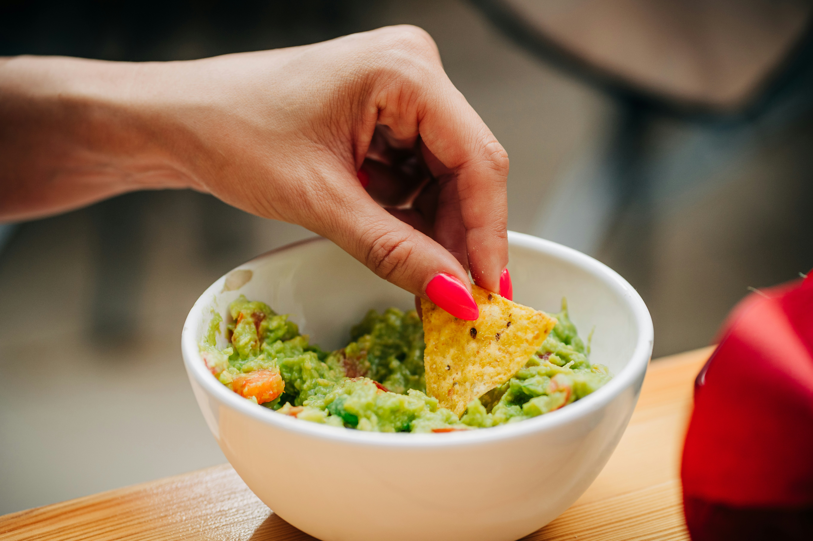

Guacamole Recipe

Description:
A fresh and flavorful dip made from ripe avocados, lime juice, cilantro,
and salt, often enhanced with onions, tomatoes, and jalapeños.
Popular in Mexican cuisine and served with tortilla chips.
Ingredients:
- 3 ripe avocados
- 1 lime (juiced)
- 1/2 teaspoon salt
- 1/2 teaspoon ground cumin
- 1/2 teaspoon cayenne pepper
- 1 small onion (finely diced)
- 2 Roma tomatoes (diced)
- 1 tablespoon fresh cilantro (chopped)
- 1 clove garlic (minced)
- Tortilla chips (for serving)
Steps:
- Prepare the avocados: Cut the avocados in half, remove the pits,
and scoop the flesh into a bowl. Mash the avocado with a fork until
mostly smooth but with a few chunks remaining.
- Add lime juice and seasonings: Stir in the lime juice, salt, cumin,
and cayenne pepper. Adjust seasoning to taste.
- Mix in vegetables: Add the diced onion, tomatoes, cilantro, and
minced garlic. Stir until everything is well combined.
- Chill and serve: Cover the guacamole with plastic wrap (directly on
the surface to prevent browning) and refrigerate for at least
30 minutes. Serve with tortilla chips.